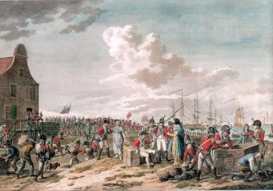

De onbekende en vergeten oorlog: de invasie van 1799, door John Grooteman.
Als de Franse generaal Jean-Charles Pichegru in 1795 Holland binnenvalt, vindt hij de Patriotten, die de macht van de Hollandse stadhouder willen beperken, aan zijn zijde. Stadhouder Willem V vlucht met zijn gezin naar Engeland en de Fransen worden binnengehaald als bevrijders. Elke tegenstand blijft uit. Op vele niveaus vinden bestuurshervormingen plaats. Er wordt een Frans bezettingsleger betaald, gevoed en gekleed door de net uitgeroepen Bataafse Republiek.
Waarom komt er in 1799 een Brits-Russisch leger in Noord-Holland aan land?
Een nieuwe coalitie van bondgenoten wil de te grote Franse macht in Europa inperken. De koning van Groot-Brittannie en de tsaar van Rusland besluiten tot een Brits-Russische invasie in de republiek. Secundair doel is het herstel van het huis van Oranje, de tegenstanders van de Patriotten. Dit leidt in 1799 in Noord-Holland tot een invasie en veldslagen tussen de Brits-Russische en de Frans-Bataafse legers.
27 augustus 1799
De landing tussen Groote- en Kleine Keeten
De Britse invasievloot bestaat uit ruim 160 fregatten en die beschieten constant de Bataven in de duinen met canonskogels en mortierkogels. Na deze aanval op 27 augustus 1799 landen om vier uur in de ochtend 7.000 Britten op het brede strand, onder bevel van de luitenant-generaal Sir Ralph Abercromby. De Bataafse bataljons zijn opgesteld tussen Kleine Keeten en Grote Keeten. De sterke Britse opmars kan niet worden gestuit. Het Bataafse leger, onder bevel van de luitenant-generaal Herman Willem Daendels, moet zich terugtrekken.
Op 28 augustus wordt Den Helder ingenomen, inclusief 11 Bataafse fregatten. Op de 30e geeft de rest van de Bataafse vloot, onder bevel van de schout-bij-nacht Samuel Story, zich over in de Vlieter aan de Britse vice-admiraal Andrew Mitchell, zonder dat er een kanonschot is gelost. Het overgrote deel van de kapiteins van deze 16 Bataafse fregatten blijkt oranjegezind te zijn.
10 september 1799
De slag om de Zijpe
Op 10 september slaan de Frans-Bataafse troepen terug. De opperbevelhebber van deze troepen, de Franse generaal Guillaume Marie Anne Brune, valt de Britse stellingen bij Petten, Krabbendam en Eenigenburg aan. Generaal Daendels moet bij Eenigenburg en Sint Maarten de Zijpe binnendringen, en de Bataafse luitenant-generaal Jean Baptiste Dumonceau krijgt opdracht via Schoorldam Krabbendam aan te vallen.
Deze Frans-Bataafse aanval van 10 september mislukt door de adequate verdediging van de Britten, in het bijzonder door de Britse artillerie. De Fransen en Bataven verliezen vele manschappen. Drie dagen later komen de eerste Russen en ook de Britse opperbevelhebber, de hertog van York en Albany, aan land in Den Helder. Het totaal aantal soldaten wordt beraamd op 40.000. Dit aantal geldt ook voor het Frans-Bataafse leger medio september 1799.
19 september 1799
De slag bij Bergen
De Britse opperbevelhebber, de hertog van York, besluit op 19 september op vier punten de Frans-Bataafse stellingen aan te vallen: Bergen, Warmenhuizen, Oudkarspel en Hoorn. De strijd laat te wensen over, waardoor de Frans-Bataafse troepen de aanvallen kunnen afslaan. De zwaarste en belangrijkste strijd woedt in Bergen.
De Russische colonne trekt om half drie in de ochtend vanuit de Zijpe via de Slaperdijk op naar Groet, Schoorl en daarna naar Bergen. Om acht uur wordt Bergen ingenomen. De Russen plunderen het dorp en richten een drinkgelag aan in het Franse depot aan de Ruinelaan. Maar het tij keert. Het Franse opperbevel stuurt vanuit Alkmaar versterkingen en rond twaalf uur wordt Bergen heroverd. De Russische generaal Herman wordt met 1.274 manschappen gevangen genomen en afgevoerd naar Alkmaar en later naar Haarlem. De Russische generaal von Essen neemt het bevel over en besluit te vluchten met duizenden Russen, Kozakken en Britten naar hun stellingen in de Zijpe.
2 oktober 1799
De tweede slag bij Bergen
Op 2 oktober trekt een deel van het Britse leger op naar Oudkarspel en Alkmaar. Twee colonnes gaan langs de kust en door de duinen richting Egmond aan Zee, en een Russische eenheid trekt naar Schoorl en Bergen. Er volgen zware gevechten op het strand en in de duinen, onder andere bij het Russenduin in het huidige Bergen aan Zee.
Het duingebied tussen Bergen aan Zee en de Egmonden valt in Brits-Russische handen. De Fransen en Bataven trekken zich terug op de lijn Beverwijk, Castricum, Limmen en Akersloot. Generaal Brune verplaatst zijn hoofdkwartier naar Beverwijk. In de middag van 3 oktober nemen de Britten zonder slag of stoot Alkmaar in.

6 oktober 1799
De slag bij Castricum
In de ochtend van 6 oktober veroveren de Britten Limmen en Akersloot. Tegelijkertijd verovert een Russische brigade Bakkum. De Russen stoten door naar Castricum, zonder steun van de Britten en tegen de afspraken in. Hierdoor lopen de gevechten uit de hand en nemen de Fransen het dorp weer in.
Dan wordt Castricum weer ingenomen, nu door de Britten en Russen. Na een laatste tegenaanval en charge van de Bataafse cavalerie trekken de Russen en Britten zich uiteindelijk terug. De strijd eindigt deze dag onbeslist. De hertog van York en generaal Brune besluiten vredesonderhandelingen te starten.
18 oktober 1799
Vredesakkoord van Alkmaar
Na de slag bij Castricum is ook het Brits-Russische leger zeer verzwakt: er zijn veel doden, gevangenen en gewonden en er is een groot gebrek aan eten, water, munitie en versterkingen. De hertog van York geeft opdracht aan zijn legers zich terug te trekken naar de Zijpe.
De vredesonderhandelingen starten op 13 oktober in het hoofdkwartier van generaal Brune aan de Oudegracht 218 te Alkmaar. Op 18 oktober 1799 wordt in het hoofdkwartier van Brune de vrede getekend. De Britten behouden de Bataafse oorlogsvloot, bestaande uit 27 zware fregatten, en krijgen een vrije aftocht in ruil voor de vrijlating van 8.000 Franse en Bataafse krijgsgevangenen. Er wordt geen oorlogsschade betaald.
Op 22 oktober vertrekken de eerste troepen uit Den Helder en op 29 november verlaten de laatste Britse schepen de Bataafse Republiek. De Russen worden overgebracht naar de eilanden Jersey en Guernsey. Gedurende de drie maanden, vanaf de landing tot het vertrek, zijn er 22.500 doden en vermisten te betreuren onder de Bataafse, Franse, Britse en Russische legers.
Nawoord
De oorlog zou nog jaren diepe sporen nalaten, niet alleen in het landschap maar ook in de Noord-Hollandse ziel. De armoede had Noord-Holland in haar greep, onder andere omdat de schaderekeningen van de burgers nauwelijks zijn uitbetaald. De infrastructuur zoals wegen, bruggen, dijken, duikers en sluizen heeft het moeten ontgelden.
Ook de natuur, waar de vele onderwaterzettingen enorme schade hebben aangericht en tienduizenden bomen werden gekapt en opgestookt, was slachtoffer van de strijd. En niet te vergeten de verhoudingen tussen gezagsgetrouwe Orangisten en fanatieke Republikeinen.
Tekst: John Grooteman. Bergen NH, 28 februari 2025.